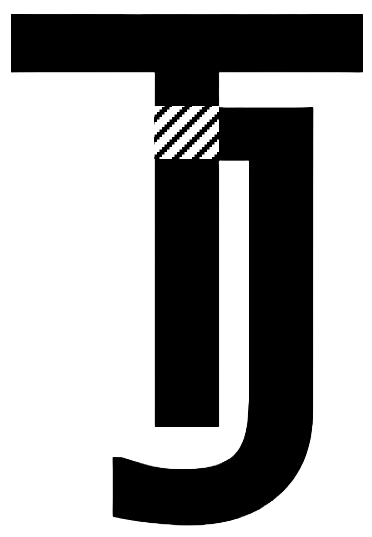

Fun, Anti-Design Website
Researched Javascript functions and CSS stylings to create random web interactions that go against design principles and create havoc in website form.

Summary
Throughout the past summer, I found myself with some spare time. As the non-nerd I am, I filled a lot of this time on programming websites and watching Youtube tutorials all about HTML, CSS, and Javascript. I found it highly interesting how these three languages can communicate together to create some of the coolest visual effects.
This project is a collection of a bountiful amount of random functionalities I learned that combined all three of those languages. The goal is to make users either laugh or become frustrated, depending on their mood! It includes a fun sign-in page, initial navigation screens, and an eventual hub for mini-games. Enjoy at your own risk :) (link is at the bottom).
What is Anti-Design?
"Anti-design is a digital design approach that rejects convention and traditional aesthetics in favor of challenging, innovative layouts" according to 99designs.com. Anti-designs can still be aesthetic, usable, and beneficial, however, many anti-designs simply reject UX laws in favor of something original. While this specific anto-design is one giant hyperbole, I still found it fun to form it into a single, cohesive website!
Initial Log-In Screens
The initial log-in screens instruct users with one simple rule: "Do not touch anything blue". It gets increasingly harder to avoid doing so, with the log-in screens being surrounded by blue, or certain buttons that need to be clicked being surrounded by blue, too. Using Javascript and CSS techniques, I was able to enforce this rule and send any violators back to the start page.
In the midst of these screens, as well, there is a poorly styled (and I mean POORLY STYLED) page containing a task to just click to go to the next page. I learned how to use Javascript to create a countdown and text that dissolves in order to make this page fun for users to navigate. Hopefully you enjoy it!
Welcome to the Hub!
After the very simple and well-designed navigation of the log-in screens, users can move into the game hub! A quick WARNING: Please do not use the "page with lots of colored and shaped words" if you have any restrictions regarding flashing lights or fast changing screens. It is meant to be an extra difficult mini-game due to lots of flashing and moving parts, and not meant to harm anyone with visual restrictions!
Here is a quick explanation of the other mini-games: "page with lots of links with no direction" is exactly as it sounds, you just have to find the one link that leads to the win! "page with a speed game" is a game of quickness and color knowledge. "krusty krab menu and more!" contains links to the krusty krab and kuddly krab menus (I found the fonts for them!) All other pages were either unfinished or lead to nothing as of now, as it was just a fun summer project :)
Overall
I feel like this project taught me such random ways to use Javascript, CSS, HTML, to make whatever I wanted! I had so much fun searching for more fun ideas to implement, watching videos on people who are passionate about front-end design, and making those innovations into my own. I really hope I have more time to find more cool designs, and make some of my own.
Links